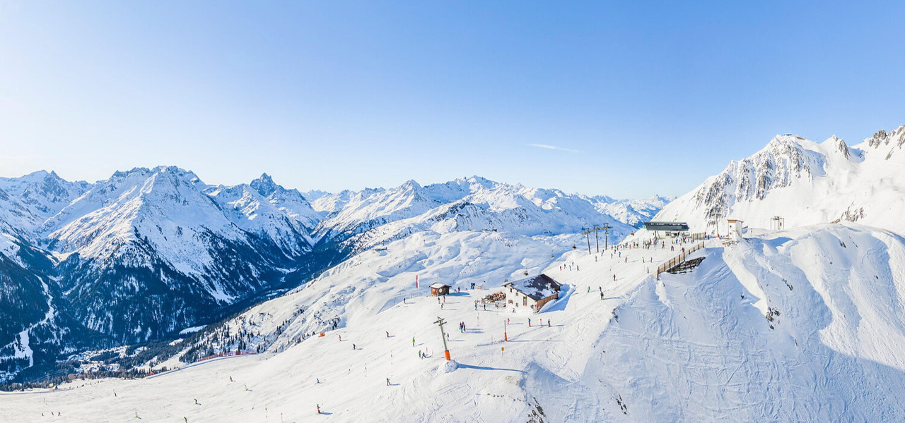
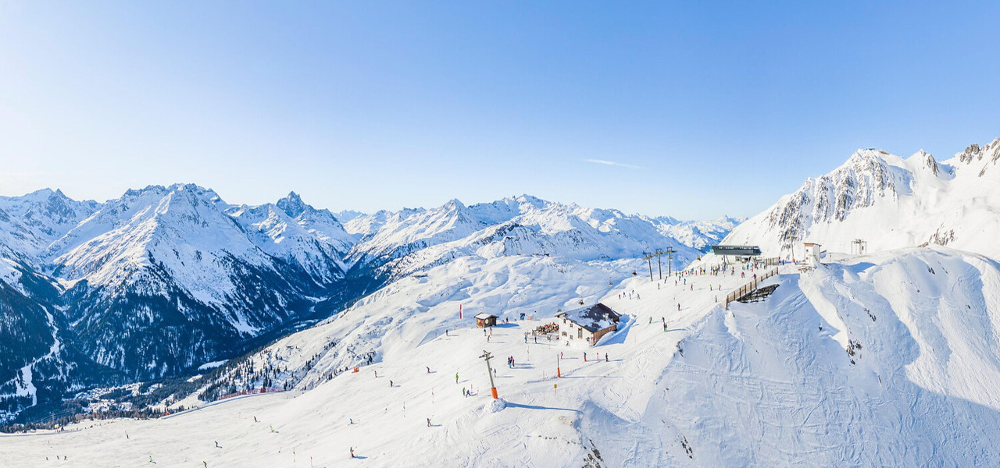

Der Freizeit Kompass
Deine Saison - Dein Ticket - Dein Plan
Entdecke mit deinem Freizeitticket die Highlights der Sommer- und Wintersaison in Tirol! Egal ob verschneite Gipfel mit den schönsten Skigebieten, sonnige Freibäder oder Badeseen in deiner Nähe, die nächsten Bergbahnen oder interessante Museen. Dein Freizeitkompass zeigt dir den richtigen Weg zum nächsten Abenteuer.
#twoseasonstyrol ist deine interaktive Plattform zur optimalen Freizeitplanung. Hier findest du alles auf einen Blick, was mit deinem Freizeitticket möglich ist. Und das saisonal aufgeteilt in Sommer und Winter.

Alle Infos auf einen Klick
Übersichtliche Karten für alle Freizeitangebote im Sommer und Winter
Infos zu Öffnungszeiten und Anreise für eine entspannte und umweltfreundliche Planung
Wetterdaten in Echtzeit inklusive Temperatur, Wind und Lawinensituation
Anreise
Die Anreise zu den Freizeitticket-Angeboten in Tirol ist einfach und bequem. Nutze die öffentlichen Verkehrsmittel, um stressfrei zu deinem Ziel zu gelangen. Hier findest du den Routenplaner der ÖBB, der dir hilft, die beste Verbindung zu finden.
Routenplaner